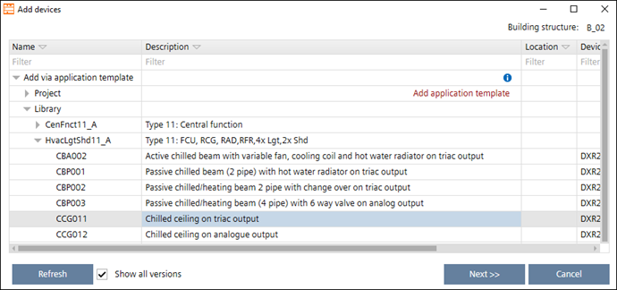
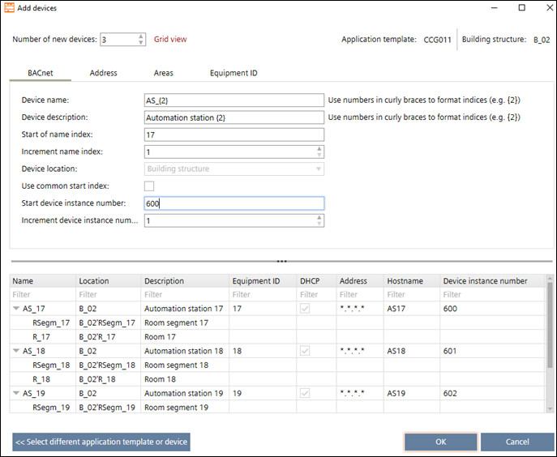
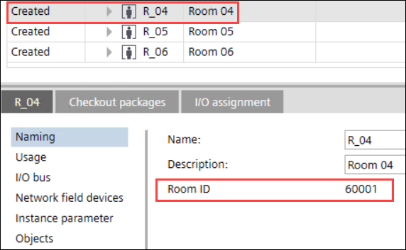
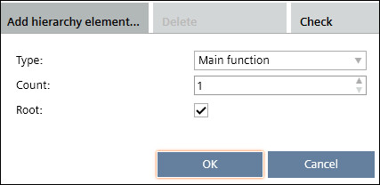
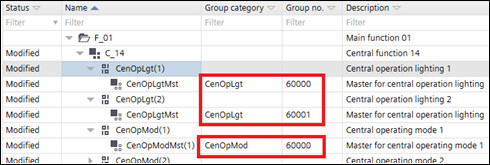

Room ID 遵循设备实例编号
您可以使用 BACnet 设备实例编号创建房间 /Group IDs。
Room devices - Room IDs
- Go to Settings > Number ranges and under Range settings, tick the checkbox for Room ID follows device instance number.
- Go to Building > Building structure.
- Click Add device.
- In the Add devices window that opens, expand the Add via application template option.
- Expand the Library option.
- Select the template for which you want to create the automation station and click Next.

- A new window opens to enter the device details.
- In the Number of new devices field, enter the number of devices you want to add.
- In the BACnet tab, enter the device instance number in the Start device instance number field.
- Enter the increment value/number in the Increment device instance number field.
- Click OK.

- The automation stations are created according to the number of devices added.
- Click
 .
. - Select the room and open the Details pane.
- Click Naming.
- The Room ID is displayed on the right window. This Room ID follows the business logic such as, Room ID = 100 times (Device instance number + increment value).
For example, Start device instance number = 600, Increment device instance number = 1 and Number of new devices = 3. The devices are created with the device instance numbers as 600, 601 and 602 and the Room IDs for these three devices will be created as 60001, 60101 and 60201.

Central functions - Group IDs
- Go to Settings > Number ranges and under Range settings, tick the checkbox for Room ID follows device instance number.
- Go to Building > Central functions.
- Click Add hierarchy element.

- In the window that opens, enter the Type and Count of the hierarchy element and click OK.
- A new hierarchy element F_01 is created.
- Drag and drop the central function element into the newly created hierarchy element F_01.
- Expand the central function element.

- The group number is displayed in the Group no column. This group number follows the business logic such as, Group no. = 100 times Device instance number. This is logic used for each group category.